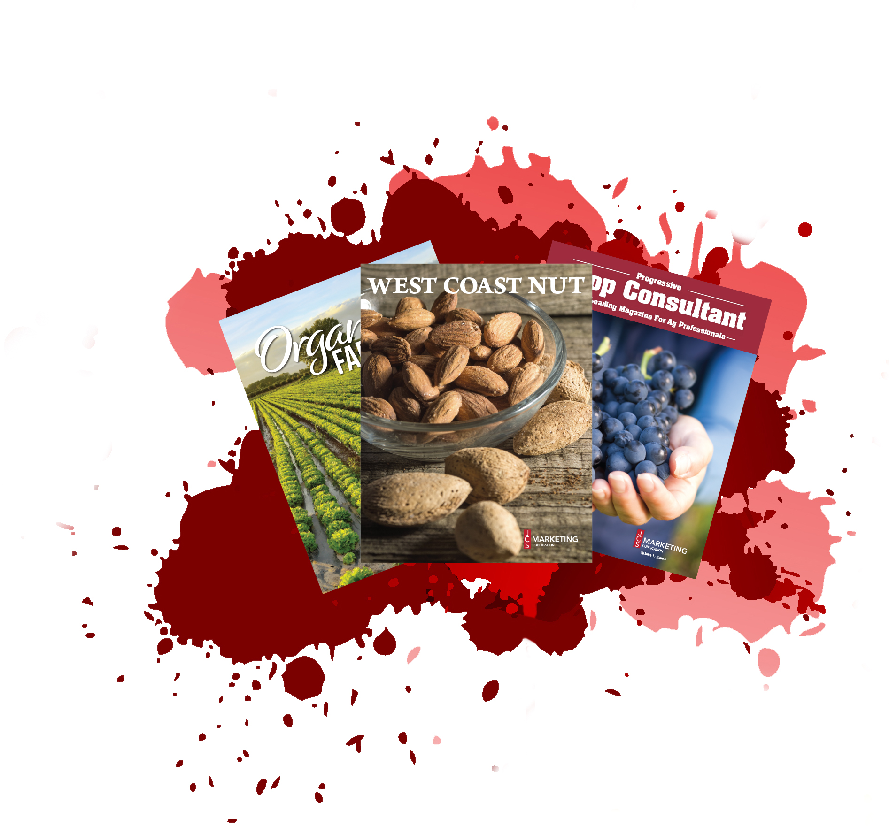

<!DOCTYPE html>
<html>
  <title>Jcs Marketing Inc</title>
  <meta charset="utf-8">
  <meta name="viewport" content="width=device-width, inital-scale=1">
  <link rel="stylesheet" href="css/bootstrap.min.css">
  <link rel="stylesheet" href="css/style.css">
  <link rel="stylesheet" href="css/animate.css">
  <link rel="stylesheet" href="https://use.fontawesome.com/releases/v5.0.10/css/all.css" integrity="sha384-+d0P83n9kaQMCwj8F4RJB66tzIwOKmrdb46+porD/OvrJ+37WqIM7UoBtwHO6Nlg" crossorigin="anonymous">
  <link rel="stylesheet" href="https://fonts.googleapis.com/css?family=Lato:100,300,400,700">
</html>
<div class="red_strip">
  <div class="container_strip">
    <div class="phone_number"><i class="fas fa-phone">	&nbsp;</i><span>333-333-3434</span></div>
  </div>
</div>
<div class="video_hero_container">
  <div class="demo">
    <div class="container-fluid">
      <div class="row">
        <div class="col-md-12">
          <div class="navbar">
            <nav class="menu">
              <div class="nav-layer"></div>
              <ul>
                <li><a href="index.html">Home</a></li>
                <li><a href="#">Publications</a></li>
                <li><a href="#">Trade Shows</a></li>
                <li><a href="services.html">Services</a></li>
                <li><a href="#">Contact</a></li>
              </ul>
            </nav><a class="nav-toggle" href="#"><span></span><span></span><span></span></a>
          </div>
        </div>
      </div>
    </div>
  </div>
  <div class="video_wrapper">
    <video autoplay loop>
      <source src="img/jcsmarketing.mp4">
    </video>
    <div class="hero_sub_container">
      <h1 class="hero_header">Welcome To JCS Marketing Inc</h1>
      <p class="hero_sub_header">We Help With Your &nbsp;<span class="element"></span></p>
    </div>
  </div>
</div>
<!--bootstrap nav link for refrence      -->
<!--https://bootsnipp.com/snippets/35pvq//- a.hero_button Lets Go
-->
<body>
  <section class="publication_jcs">
    <div class="container-fluid">
      <div class="row no-gutters">
        <div class="col-lg-4">
          <div class="publication_magazine_box">
            <div class="publication_magazine_box_caption">
              <div class="publication_magazine_box_caption_content">
                <div class="publication_magazine_box_category">
                  <div class="publication_magazine_box_info">
                    <p>West Coast Nut Magazine was created to better serve the needs of the nut industry, and it has exceeded the highest expectations since its creation in 2011. Our goals are simple: to be the best publication in the industry, offering high-quality editorial to readers while connecting advertisers with decision makers in every key market.</p><a href="http://wcngg.com/">Click Here To Learn More</a>
                  </div>
                </div>
              </div>
            </div>
          </div>
        </div>
        <div class="col-lg-4">
          <div class="publication_magazine_box">
            <div class="publication_magazine_box_caption">
              <div class="publication_magazine_box_caption_content">
                <div class="publication_magazine_box_category">
                  <div class="publication_magazine_box_info">
                    <p>As the demand for efficient agriculture practices continues to become more important in our industry, the need for key resources and solutions becomes critical. Progressive Crop Consultant Magazine was designed to help today's crop consultant become more aware of cutting-edge information that moves California specialty crops forward.</p><a href="http://progressivecrop.com/">Click Here To Learn More</a>
                  </div>
                </div>
              </div>
            </div>
          </div>
        </div>
        <div class="col-lg-4">
          <div class="publication_magazine_box">
            <div class="publication_magazine_box_caption">
              <div class="publication_magazine_box_caption_content">
                <div class="publication_magazine_box_category">
                  <div class="publication_magazine_box_info">
                    <p>Organic Farmer was created with the goal of meeting the needs of organic farmers across the nation. With that goal in mind, Organic Farmer strives to provide our readers with must-read editorials from industry experts that will benefit your crop by helping you farm more effectively.</p><a href="http://organicfarmermag.com/">Click Here To Learn More</a>
                  </div>
                </div>
              </div>
            </div>
          </div>
        </div>
      </div>
    </div>
  </section>
  <section class="about_jcs animated">
    <div class="container">
      <div class="row">
        <div class="col-lg-6"></div>
        <div class="col-lg-6">
          <p class="about_jcs_paragraph">JCS Marketing Inc. is a full-service agriculture marketing firm operating in the heart of the San Joaquin Valley. Our goal is to provide resources to growers and ag professionals while supporting the needs of businesses and affiliates that serve the industry. We know ag from the inside out, and our talented team of professionals makes every client a priority. Whether you are launching a fledgling business, want to target a niche market, or have shaped the industry for years, we are prepared to take on the responsibility of representing your brand to the people that matter most.</p>
        </div>
      </div>
    </div>
  </section>
  <div class="what_we_have_done">
    <div class="done"></div>
    <div class="content-wrapper">
      <h1>JCS Marketing Statistics</h1>
      <div class="container-fluid">
        <div class="row">
          <div class="col-lg-4">
            <p class="we_number" id="counter1">0</p>
            <p class="we_do">PUBLICATIONS</p>
            <p class="we_done">For growers and professionals</p>
          </div>
          <div class="col-lg-4">
            <p class="we_number" id="counter2">0</p>
            <p class="we_do">EVENTS</p>
            <p class="we_done">Held throughout California</p>
          </div>
          <div class="col-lg-4">
            <p class="we_number" id="counter">0</p>
            <p class="we_do">SUBSCRIBERS</p>
            <p class="we_done">Across print and digital platforms          </p>
          </div>
        </div>
      </div>
    </div>
  </div>
  <section class="services animated">
    <div class="d-flex justify-content-center">
      <h1>Services We Provide</h1>
    </div>
    <div class="container padding">
      <div class="row">
        <div class="col-lg-4">
          <div class="card">
            <div class="card-body">
              <h2>Web Development</h2>
              <p>Where are your customers?  We can connect your company to the audience you want through custom website design.  Your website should tell a story about your company and provide users with an experience that is reflective of your brand. Our team of web designers and developers craft websites that create positive UX/UI designs that can drive growth for your business.</p>
            </div>
          </div>
        </div>
        <div class="col-lg-4">
          <div class="card">
            <div class="card-body">
              <h2>Graphics</h2>
              <p>Your brand needs to make a unique visual impact to be effective. Whether you’re kicking off a new campaign, launching a new product or unveiling your brand for the first time, we will find a creative solution to meet your needs. At JCS Marketing, we know the ag business from the inside out, and look forward to working with you to create eye-catching pieces that are tailored directly to your business.</p>
            </div>
          </div>
        </div>
        <div class="col-lg-4">
          <div class="card">
            <div class="card-body">
              <h2>Marketing Deliverables </h2>
              <p>By applying our industry knowledge, we provide custom branded products that are specific to your company’s needs. Our talented team of passionate promo specialists work with you to create unique promotional items. From pens and hats, to t-shirts and brochures, our team is here to help you! We take pride in delivering quality products to help your brand stand out from the pack.</p>
            </div>
          </div>
        </div>
      </div>
    </div>
  </section>
</body>
<footer>
  <script src="js/jquery-3.2.1.min.js"></script>
  <script src="js/typed.min.js"></script>
  <script src="js/ScrollMagic.min.js"></script>
  <script src="js/TweenMax.min.js"></script>
  <script src="js/animation.gsap.min.js"></script>
  <script src="js/debug.addIndicators.min.js"></script>
  <script src="js/bootstrap.min.js"></script>
  <script src="js/myjs.js"></script>
  <section class="contact">
    <div class="container-fluid">
      <div class="row">
        <div class="col-lg-4 contact_info">
          <p class="footer_info"> At JCS Marketing, our goal is to provide reliable resources to growers and Agriculture professionals through our publications: West Coast Nut, Progressive Crop Consultant, and Organic Farmer. Our trade shows, that range from northern California to southern California are another source of reliable information, education and a great way to network with the industry. At JCS Marketing we work hard to be a dependable outlet of information for the Agriculture industry.</p>
          <h2>Contact Us </h2>
          <p class="phone">559-352-4456</p>
          <p class="address">P.O. BOX 27772, FRESNO, CA 93729</p>
          <p class="email">jcsmarketingoffice@gmail.com</p>
        </div>
        <div class="col-lg-5 white_box">
          <h1>Send Us A Message</h1>
          <p>Get in touch with the team at Jcs Marketing Inc. Fill out the form below and we'll get back to you as soon as possible.</p>
          <form>
            <div class="form-row mt-3">
              <div class="col">
                <input class="form-control" type="text" placeholder="First Name">
              </div>
              <div class="col">
                <input class="form-control" type="text" placeholder="Last Name">
              </div>
            </div>
            <div class="form-row mt-5">
              <div class="col">
                <textarea class="form-control" rows="9" placeholder="textarea" id="FormControl"></textarea><a href="#">Send</a>
              </div>
            </div>
          </form>
        </div>
        <div class="col-lg-1"></div>
      </div>
    </div>
  </section>
  <section class="social_media">
    <nav>
      <ul class="nav justify-content-center">
        <li class="nav-item"><a class="nav-link" href="https://www.facebook.com/JCSMarketinginc/" target="_blank"><i class="fab fa-facebook-square"></i></a></li>
        <li class="nav-item"><a class="nav-link" href="https://twitter.com/jcs_marketing" target="_blank"><i class="fab fa-twitter-square"></i></a></li>
      </ul>
    </nav>
  </section>
  <section class="bottom_bar">
    <p class="text-center">JCS Marketing, Inc.</p>
  </section>
</footer>